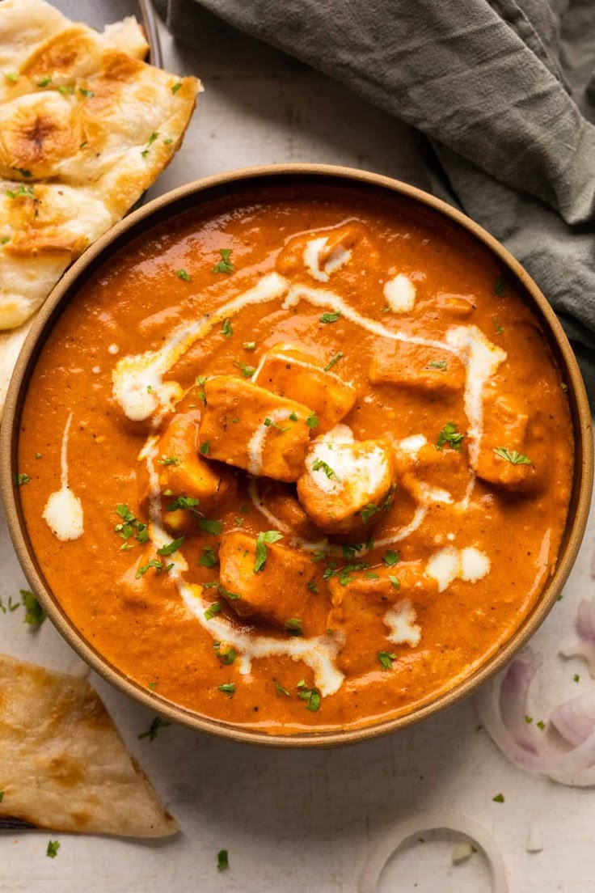
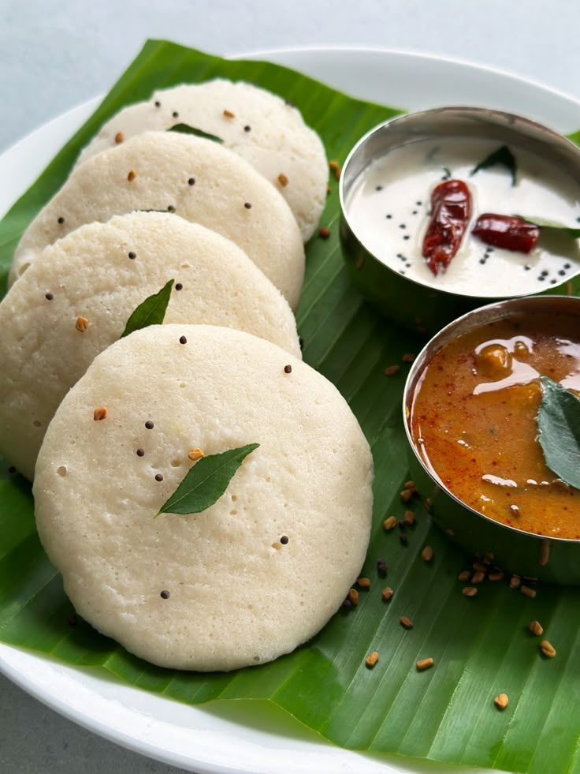
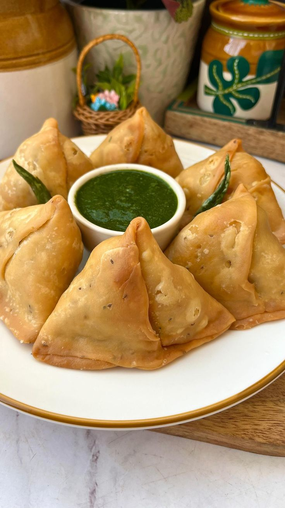

Our Recipes
Explore delicious recipes from different regions of India and beyond.
North Indian
Famous for rich curries, paneer dishes, and tandoori delights.
South Indian
Crispy dosas, fluffy idlis, tangy sambar, and coconut-flavored curries.
Snacks
Quick and easy recipes to satisfy your hunger anytime.
